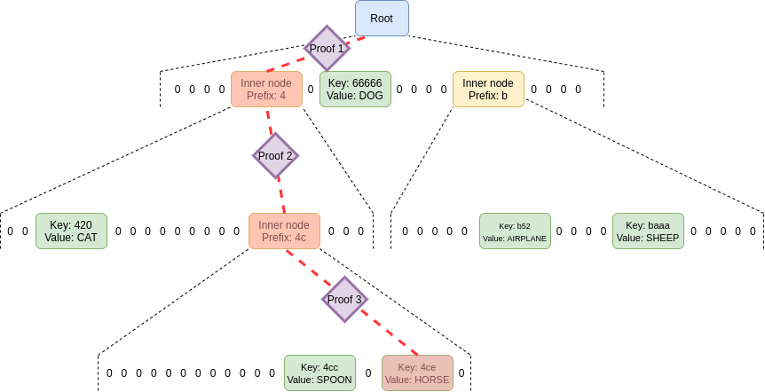
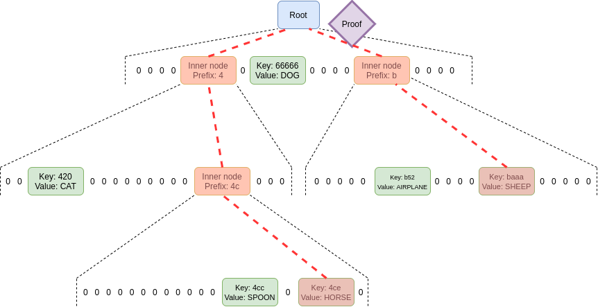
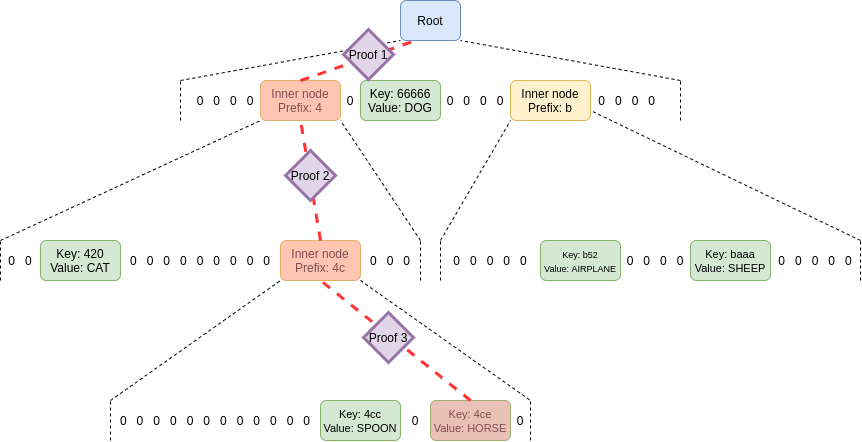
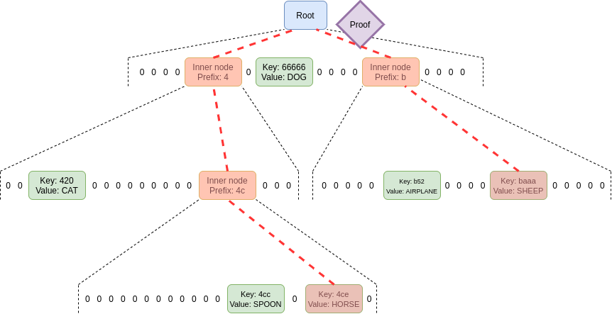

Verkle trees
2021 Jun 18
See all posts
Verkle trees
Special thanks to Dankrad Feist and Justin Drake for feedback and
review.
Verkle trees are shaping up to be an important part of Ethereum's
upcoming scaling upgrades. They serve the same function as Merkle trees:
you can put a large amount of data into a Verkle tree, and make a short
proof ("witness") of any single piece, or set of pieces, of that data
that can be verified by someone who only has the root of the tree. The
key property that Verkle trees provide, however, is that they are
much more efficient in proof size. If a tree contains a billion
pieces of data, making a proof in a traditional binary Merkle tree would
require about 1 kilobyte, but in a Verkle tree the proof would be
less than 150 bytes - a reduction sufficient to make stateless
clients finally viable in practice.
Verkle trees are still a new idea; they were first introduced by John
Kuszmaul in this
paper from 2018, and they are still not as widely known as many
other important new cryptographic constructions. This post will explain
what Verkle trees are and how the cryptographic magic behind them works.
The price of their short proof size is a higher level of dependence on
more complicated cryptography. That said, the cryptography still much
simpler, in my opinion, than the advanced cryptography found in modern ZK SNARK schemes. In this post I'll do
the best job that I can at explaining it.
Merkle Patricia
vs Verkle Tree node structure
In terms of the structure of the tree (how the nodes in the
tree are arranged and what they contain), a Verkle tree is very similar
to the Merkle
Patricia tree currently used in Ethereum. Every node is either (i)
empty, (ii) a leaf node containing a key and value, or (iii) an
intermediate node that has some fixed number of children (the "width" of
the tree). The value of an intermediate node is computed as a hash of
the values of its children.
The location of a value in the tree is based on its key: in the
diagram below, to get to the node with key 4cc, you start
at the root, then go down to the child at position 4, then
go down to the child at position c (remember:
c = 12 in hexadecimal), and then go down again to the child
at position c. To get to the node with key
baaa, you go to the position-b child of the
root, and then the position-a child of that node.
The node at path (b,a) directly contains the node with key
baaa, because there are no other keys in the tree starting
with ba.

The structure of nodes in a hexary (16 children per parent)
Verkle tree, here filled with six (key, value)
pairs.
The only real difference in the structure of Verkle trees
and Merkle Patricia trees is that Verkle trees are wider in practice.
Much wider. Patricia trees are at their most efficient when
width = 2 (so Ethereum's hexary Patricia tree is actually
quite suboptimal). Verkle trees, on the other hand, get shorter and
shorter proofs the higher the width; the only limit is that if width
gets too high, proofs start to take too long to create. The Verkle tree
proposed for Ethereum has a width of 256, and some even favor
raising it to 1024 (!!).
Commitments and proofs
In a Merkle tree (including Merkle Patricia trees), the proof of a
value consists of the entire set of sister nodes: the proof
must contain all nodes in the tree that share a parent with any
of the nodes in the path going down to the node you are trying to prove.
That may be a little complicated to understand, so here's a picture of a
proof for the value in the 4ce position. Sister nodes that
must be included in the proof are highlighted in red.

That's a lot of nodes! You need to provide the sister nodes at each
level, because you need the entire set of children of a node to compute
the value of that node, and you need to keep doing this until you get to
the root. You might think that this is not that bad because most of the
nodes are zeroes, but that's only because this tree has very few nodes.
If this tree had 256 randomly-allocated nodes, the top layer would
almost certainly have all 16 nodes full, and the second layer would on
average be ~63.3% full.
In a Verkle tree, on the other hand, you do not need to
provide sister nodes; instead, you just provide the path, with a little
bit extra as a proof. This is why Verkle trees benefit from
greater width and Merkle Patricia trees do not: a tree with greater
width leads to shorter paths in both cases, but in a Merkle Patricia
tree this effect is overwhelmed by the higher cost of needing to provide
all the width - 1 sister nodes per level in a proof. In a
Verkle tree, that cost does not exist.
So what is this little extra that we need as a proof? To understand
that, we first need to circle back to one key detail: the hash function
used to compute an inner node from its children is not a regular hash.
Instead, it's a vector commitment.
A vector commitment scheme is a special type of hash function,
hashing a list \(h(z_1, z_2 ... z_n)
\rightarrow C\). But vector commitments have the special property
that for a commitment \(C\) and a value
\(z_i\), it's possible to make a short
proof that \(C\) is the commitment to
some list where the value at the i'th position is \(z_i\). In a Verkle proof, this short proof
replaces the function of the sister nodes in a Merkle Patricia proof,
giving the verifier confidence that a child node really is the child at
the given position of its parent node.

No sister nodes required in a proof of a value in the tree;
just the path itself plus a few short proofs to link each commitment in
the path to the next.
In practice, we use a primitive even more powerful than a vector
commitment, called a polynomial commitment. Polynomial
commitments let you hash a polynomial, and make a proof for the
evaluation of the hashed polynomial at any point. You can use
polynomial commitments as vector commitments: if we agree on a set of
standardized coordinates \((c_1, c_2 ...
c_n)\), given a list \((y_1, y_2 ...
y_n)\) you can commit to the polynomial \(P\) where \(P(c_i) = y_i\) for all \(i \in [1..n]\) (you can find this
polynomial with Lagrange
interpolation). I talk about polynomial commitments at length in my
article on ZK-SNARKs. The two polynomial commitment schemes that are
the easiest to use are KZG
commitments and bulletproof-style
commitments (in both cases, a commitment is a single 32-48 byte
elliptic curve point). Polynomial commitments give us more flexibility
that lets us improve efficiency, and it just so happens that the
simplest and most efficient vector commitments available are
the polynomial commitments.
This scheme is already very powerful as it is: if you use a
KZG commitment and proof, the proof size is 96 bytes per intermediate
node, nearly 3x more space-efficient than a simple Merkle proof
if we set width = 256. However, it turns out that we can increase
space-efficiency even further.
Merging the proofs
Instead of requiring one proof for each commitment along the path,
by using the extra properties of polynomial commitments we can
make a single fixed-size proof that proves all parent-child
links between commitments along the paths for an unlimited number of
keys. We do this using a scheme
that implements multiproofs through random evaluation.
But to use this scheme, we first need to convert the problem into a
more structured one. We have a proof of one or more values in a Verkle
tree. The main part of this proof consists of the intermediary nodes
along the path to each node. For each node that we provide, we also have
to prove that it actually is the child of the node above it (and in the
correct position). In our single-value-proof example above, we needed
proofs to prove:
- That the
key: 4ce node actually is the
position-e child of the prefix: 4c
intermediate node.
- That the
prefix: 4c intermediate node actually is the
position-c child of the prefix: 4 intermediate
node.
- That the
prefix: 4 intermediate node actually is the
position-4 child of the root
If we had a proof proving multiple values (eg. both 4ce
and 420), we would have even more nodes and even more
linkages. But in any case, what we are proving is a sequence of
statements of the form "node A actually is the position-i child of node
B". If we are using polynomial commitments, this turns into
equations: \(A(x_i) = y\), where \(y\) is the hash of the commitment to \(B\).
The details of this proof are technical and better explained
by Dankrad Feist than myself. By far the bulkiest and time-consuming
step in the proof generation involves computing a polynomial \(g\) of the form:
\(g(X) = r^0\frac{A_0(X) - y_0}{X - x_0} +
r^1\frac{A_1(X) - y_1}{X - x_1} + ... + r^n\frac{A_n(X) - y_n}{X -
x_n}\)
It is only possible to compute each term \(r^i\frac{A_i(X) - y_i}{X - x_i}\) if that
expression is a polynomial (and not a fraction). And that requires \(A_i(X)\) to equal \(y_i\) at the point \(x_i\).
We can see this with an example. Suppose:
- \(A_i(X) = X^2 + X + 3\)
- We are proving for \((x_i = 2, y_i =
9)\). \(A_i(2)\) does equal
\(9\) so this will work.
\(A_i(X) - 9 = X^2 + X - 6\), and
\(\frac{X^2 + X - 6}{X - 2}\) gives a
clean \(X - 3\). But if we tried to fit
in \((x_i = 2, y_i = 10)\), this would
not work; \(X^2 + X - 7\)
cannot be cleanly divided by \(X -
2\) without a fractional remainder.
The rest of the proof involves providing a polynomial commitment to
\(g(X)\) and then proving that the
commitment is actually correct. Once again, see Dankrad's
more technical description for the rest of the proof.

One single proof proves an unlimited number of parent-child
relationships.
And there we have it, that's what a maximally efficient Verkle proof
looks like.
Key properties
of proof sizes using this scheme
- Dankrad's multi-random-evaluation proof allows the prover to
prove an arbitrary number of evaluations \(A_i(x_i) = y_i\), given
commitments to each \(A_i\) and the
values that are being proven. This proof is constant
size (one polynomial commitment, one number, and two proofs;
128-1000 bytes depending on what scheme is being used).
- The \(y_i\) values do not
need to be provided explicitly, as they can be directly
computed from the other values in the Verkle proof: each \(y_i\) is itself the hash of the next value
in the path (either a commitment or a leaf).
- The \(x_i\) values also do
not need to be provided explicitly, since the paths (and hence
the \(x_i\) values) can be computed
from the keys and the coordinates derived from the paths.
- Hence, all we need is the leaves (keys and values) that we
are proving, as well as the commitments along the path from each leaf to
the root.
- Assuming a width-256 tree, and \(2^{32}\) nodes, a proof would require the
keys and values that are being proven, plus (on average) three
commitments for each value along the path from that value to
the root.
- If we are proving many values, there are further
savings: no matter how many values you are proving, you will
not need to provide more than the 256 values at the top level.
Proof
sizes (bytes). Rows: tree size, cols: key/value pairs proven
| 256 |
176 |
176 |
176 |
176 |
176 |
| 65,536 |
224 |
608 |
4,112 |
12,176 |
12,464 |
| 16,777,216 |
272 |
1,040 |
8,864 |
59,792 |
457,616 |
| 4,294,967,296 |
320 |
1,472 |
13,616 |
107,744 |
937,472 |
Assuming width 256, and 48-byte KZG commitments/proofs. Note also
that this assumes a maximally even tree; for a realistic randomized
tree, add a depth of ~0.6 (so ~30 bytes per element). If
bulletproof-style commitments are used instead of KZG, it's safe to go
down to 32 bytes, so these sizes can be reduced by 1/3.
Prover and verifier
computation load
The bulk of the cost of generating a proof is
computing each \(r^i\frac{A_i(X) - y_i}{X -
x_i}\) expression. This requires roughly four field operations
(ie. 256 bit modular arithmetic operations) times the width of the tree.
This is the main constraint limiting Verkle tree widths. Fortunately,
four field operations is a small cost: a single elliptic curve
multiplication typically takes hundreds of field operations. Hence,
Verkle tree widths can go quite high; width 256-1024 seems like an
optimal range.
To edit the tree, we need to "walk up the
tree" from the leaf to the root, changing the intermediate commitment at
each step to reflect the change that happened lower down. Fortunately,
we don't have to re-compute each commitment from scratch. Instead, we
take advantage of the homomorphic property: given a polynomial
commitment \(C = com(F)\), we can
compute \(C' = com(F + G)\) by
taking \(C' = C + com(G)\). In our
case, \(G = L_i * (v_{new} -
v_{old})\), where \(L_i\) is a
pre-computed commitment for the polynomial that equals 1 at the position
we're trying to change and 0 everywhere else.
Hence, a single edit requires ~4 elliptic curve multiplications (one
per commitment between the leaf and the root, this time including the
root), though these can be sped up considerably by pre-computing and
storing many multiples of each \(L_i\).
Proof verification is quite efficient. For a proof
of N values, the verifier needs to do the following steps, all of which
can be done within a hundred milliseconds for even thousands of
values:
- One size-\(N\) elliptic
curve fast linear combination
- About \(4N\) field operations (ie.
256 bit modular arithmetic operations)
- A small constant amount of work that does not depend on the size of
the proof
Note also that, like Merkle Patricia proofs, a Verkle proof gives the
verifier enough information to modify the values in the tree
that are being proven and compute the new root hash after the changes
are applied. This is critical for verifying that eg. state changes in a
block were processed correctly.
Conclusions
Verkle trees are a powerful upgrade to Merkle proofs that allow for
much smaller proof sizes. Instead of needing to provide all "sister
nodes" at each level, the prover need only provide a single proof that
proves all parent-child relationships between all commitments
along the paths from each leaf node to the root. This allows proof sizes
to decrease by a factor of ~6-8 compared to ideal Merkle trees, and by a
factor of over 20-30 compared to the hexary Patricia trees that Ethereum
uses today (!!).
They do require more complex cryptography to implement, but they
present the opportunity for large gains to scalability. In the medium
term, SNARKs can improve things further: we can either SNARK the
already-efficient Verkle proof verifier to reduce witness size to
near-zero, or switch back to SNARKed Merkle proofs if/when SNARKs get
much better (eg. through
GKR, or very-SNARK-friendly hash functions, or ASICs). Further down
the line, the rise of quantum computing will force a change to STARKed
Merkle proofs with hashes as it makes the linear homomorphisms that
Verkle trees depend on insecure. But for now, they give us the same
scaling gains that we would get with such more advanced technologies,
and we already have all the tools that we need to implement them
efficiently.
Verkle trees
2021 Jun 18 See all postsSpecial thanks to Dankrad Feist and Justin Drake for feedback and review.
Verkle trees are shaping up to be an important part of Ethereum's upcoming scaling upgrades. They serve the same function as Merkle trees: you can put a large amount of data into a Verkle tree, and make a short proof ("witness") of any single piece, or set of pieces, of that data that can be verified by someone who only has the root of the tree. The key property that Verkle trees provide, however, is that they are much more efficient in proof size. If a tree contains a billion pieces of data, making a proof in a traditional binary Merkle tree would require about 1 kilobyte, but in a Verkle tree the proof would be less than 150 bytes - a reduction sufficient to make stateless clients finally viable in practice.
Verkle trees are still a new idea; they were first introduced by John Kuszmaul in this paper from 2018, and they are still not as widely known as many other important new cryptographic constructions. This post will explain what Verkle trees are and how the cryptographic magic behind them works. The price of their short proof size is a higher level of dependence on more complicated cryptography. That said, the cryptography still much simpler, in my opinion, than the advanced cryptography found in modern ZK SNARK schemes. In this post I'll do the best job that I can at explaining it.
Merkle Patricia vs Verkle Tree node structure
In terms of the structure of the tree (how the nodes in the tree are arranged and what they contain), a Verkle tree is very similar to the Merkle Patricia tree currently used in Ethereum. Every node is either (i) empty, (ii) a leaf node containing a key and value, or (iii) an intermediate node that has some fixed number of children (the "width" of the tree). The value of an intermediate node is computed as a hash of the values of its children.
The location of a value in the tree is based on its key: in the diagram below, to get to the node with key
4cc, you start at the root, then go down to the child at position4, then go down to the child at positionc(remember:c = 12in hexadecimal), and then go down again to the child at positionc. To get to the node with keybaaa, you go to the position-bchild of the root, and then the position-achild of that node. The node at path(b,a)directly contains the node with keybaaa, because there are no other keys in the tree starting withba.The structure of nodes in a hexary (16 children per parent) Verkle tree, here filled with six (key, value) pairs.
The only real difference in the structure of Verkle trees and Merkle Patricia trees is that Verkle trees are wider in practice. Much wider. Patricia trees are at their most efficient when
width = 2(so Ethereum's hexary Patricia tree is actually quite suboptimal). Verkle trees, on the other hand, get shorter and shorter proofs the higher the width; the only limit is that if width gets too high, proofs start to take too long to create. The Verkle tree proposed for Ethereum has a width of 256, and some even favor raising it to 1024 (!!).Commitments and proofs
In a Merkle tree (including Merkle Patricia trees), the proof of a value consists of the entire set of sister nodes: the proof must contain all nodes in the tree that share a parent with any of the nodes in the path going down to the node you are trying to prove. That may be a little complicated to understand, so here's a picture of a proof for the value in the
4ceposition. Sister nodes that must be included in the proof are highlighted in red.That's a lot of nodes! You need to provide the sister nodes at each level, because you need the entire set of children of a node to compute the value of that node, and you need to keep doing this until you get to the root. You might think that this is not that bad because most of the nodes are zeroes, but that's only because this tree has very few nodes. If this tree had 256 randomly-allocated nodes, the top layer would almost certainly have all 16 nodes full, and the second layer would on average be ~63.3% full.
In a Verkle tree, on the other hand, you do not need to provide sister nodes; instead, you just provide the path, with a little bit extra as a proof. This is why Verkle trees benefit from greater width and Merkle Patricia trees do not: a tree with greater width leads to shorter paths in both cases, but in a Merkle Patricia tree this effect is overwhelmed by the higher cost of needing to provide all the
width - 1sister nodes per level in a proof. In a Verkle tree, that cost does not exist.So what is this little extra that we need as a proof? To understand that, we first need to circle back to one key detail: the hash function used to compute an inner node from its children is not a regular hash. Instead, it's a vector commitment.
A vector commitment scheme is a special type of hash function, hashing a list \(h(z_1, z_2 ... z_n) \rightarrow C\). But vector commitments have the special property that for a commitment \(C\) and a value \(z_i\), it's possible to make a short proof that \(C\) is the commitment to some list where the value at the i'th position is \(z_i\). In a Verkle proof, this short proof replaces the function of the sister nodes in a Merkle Patricia proof, giving the verifier confidence that a child node really is the child at the given position of its parent node.

No sister nodes required in a proof of a value in the tree; just the path itself plus a few short proofs to link each commitment in the path to the next.
In practice, we use a primitive even more powerful than a vector commitment, called a polynomial commitment. Polynomial commitments let you hash a polynomial, and make a proof for the evaluation of the hashed polynomial at any point. You can use polynomial commitments as vector commitments: if we agree on a set of standardized coordinates \((c_1, c_2 ... c_n)\), given a list \((y_1, y_2 ... y_n)\) you can commit to the polynomial \(P\) where \(P(c_i) = y_i\) for all \(i \in [1..n]\) (you can find this polynomial with Lagrange interpolation). I talk about polynomial commitments at length in my article on ZK-SNARKs. The two polynomial commitment schemes that are the easiest to use are KZG commitments and bulletproof-style commitments (in both cases, a commitment is a single 32-48 byte elliptic curve point). Polynomial commitments give us more flexibility that lets us improve efficiency, and it just so happens that the simplest and most efficient vector commitments available are the polynomial commitments.
This scheme is already very powerful as it is: if you use a KZG commitment and proof, the proof size is 96 bytes per intermediate node, nearly 3x more space-efficient than a simple Merkle proof if we set width = 256. However, it turns out that we can increase space-efficiency even further.
Merging the proofs
Instead of requiring one proof for each commitment along the path, by using the extra properties of polynomial commitments we can make a single fixed-size proof that proves all parent-child links between commitments along the paths for an unlimited number of keys. We do this using a scheme that implements multiproofs through random evaluation.
But to use this scheme, we first need to convert the problem into a more structured one. We have a proof of one or more values in a Verkle tree. The main part of this proof consists of the intermediary nodes along the path to each node. For each node that we provide, we also have to prove that it actually is the child of the node above it (and in the correct position). In our single-value-proof example above, we needed proofs to prove:
key: 4cenode actually is the position-echild of theprefix: 4cintermediate node.prefix: 4cintermediate node actually is the position-cchild of theprefix: 4intermediate node.prefix: 4intermediate node actually is the position-4child of the rootIf we had a proof proving multiple values (eg. both
4ceand420), we would have even more nodes and even more linkages. But in any case, what we are proving is a sequence of statements of the form "node A actually is the position-i child of node B". If we are using polynomial commitments, this turns into equations: \(A(x_i) = y\), where \(y\) is the hash of the commitment to \(B\).The details of this proof are technical and better explained by Dankrad Feist than myself. By far the bulkiest and time-consuming step in the proof generation involves computing a polynomial \(g\) of the form:
\(g(X) = r^0\frac{A_0(X) - y_0}{X - x_0} + r^1\frac{A_1(X) - y_1}{X - x_1} + ... + r^n\frac{A_n(X) - y_n}{X - x_n}\)
It is only possible to compute each term \(r^i\frac{A_i(X) - y_i}{X - x_i}\) if that expression is a polynomial (and not a fraction). And that requires \(A_i(X)\) to equal \(y_i\) at the point \(x_i\).
We can see this with an example. Suppose:
\(A_i(X) - 9 = X^2 + X - 6\), and \(\frac{X^2 + X - 6}{X - 2}\) gives a clean \(X - 3\). But if we tried to fit in \((x_i = 2, y_i = 10)\), this would not work; \(X^2 + X - 7\) cannot be cleanly divided by \(X - 2\) without a fractional remainder.
The rest of the proof involves providing a polynomial commitment to \(g(X)\) and then proving that the commitment is actually correct. Once again, see Dankrad's more technical description for the rest of the proof.

One single proof proves an unlimited number of parent-child relationships.
And there we have it, that's what a maximally efficient Verkle proof looks like.
Key properties of proof sizes using this scheme
Proof sizes (bytes). Rows: tree size, cols: key/value pairs proven
Assuming width 256, and 48-byte KZG commitments/proofs. Note also that this assumes a maximally even tree; for a realistic randomized tree, add a depth of ~0.6 (so ~30 bytes per element). If bulletproof-style commitments are used instead of KZG, it's safe to go down to 32 bytes, so these sizes can be reduced by 1/3.
Prover and verifier computation load
The bulk of the cost of generating a proof is computing each \(r^i\frac{A_i(X) - y_i}{X - x_i}\) expression. This requires roughly four field operations (ie. 256 bit modular arithmetic operations) times the width of the tree. This is the main constraint limiting Verkle tree widths. Fortunately, four field operations is a small cost: a single elliptic curve multiplication typically takes hundreds of field operations. Hence, Verkle tree widths can go quite high; width 256-1024 seems like an optimal range.
To edit the tree, we need to "walk up the tree" from the leaf to the root, changing the intermediate commitment at each step to reflect the change that happened lower down. Fortunately, we don't have to re-compute each commitment from scratch. Instead, we take advantage of the homomorphic property: given a polynomial commitment \(C = com(F)\), we can compute \(C' = com(F + G)\) by taking \(C' = C + com(G)\). In our case, \(G = L_i * (v_{new} - v_{old})\), where \(L_i\) is a pre-computed commitment for the polynomial that equals 1 at the position we're trying to change and 0 everywhere else.
Hence, a single edit requires ~4 elliptic curve multiplications (one per commitment between the leaf and the root, this time including the root), though these can be sped up considerably by pre-computing and storing many multiples of each \(L_i\).
Proof verification is quite efficient. For a proof of N values, the verifier needs to do the following steps, all of which can be done within a hundred milliseconds for even thousands of values:
Note also that, like Merkle Patricia proofs, a Verkle proof gives the verifier enough information to modify the values in the tree that are being proven and compute the new root hash after the changes are applied. This is critical for verifying that eg. state changes in a block were processed correctly.
Conclusions
Verkle trees are a powerful upgrade to Merkle proofs that allow for much smaller proof sizes. Instead of needing to provide all "sister nodes" at each level, the prover need only provide a single proof that proves all parent-child relationships between all commitments along the paths from each leaf node to the root. This allows proof sizes to decrease by a factor of ~6-8 compared to ideal Merkle trees, and by a factor of over 20-30 compared to the hexary Patricia trees that Ethereum uses today (!!).
They do require more complex cryptography to implement, but they present the opportunity for large gains to scalability. In the medium term, SNARKs can improve things further: we can either SNARK the already-efficient Verkle proof verifier to reduce witness size to near-zero, or switch back to SNARKed Merkle proofs if/when SNARKs get much better (eg. through GKR, or very-SNARK-friendly hash functions, or ASICs). Further down the line, the rise of quantum computing will force a change to STARKed Merkle proofs with hashes as it makes the linear homomorphisms that Verkle trees depend on insecure. But for now, they give us the same scaling gains that we would get with such more advanced technologies, and we already have all the tools that we need to implement them efficiently.